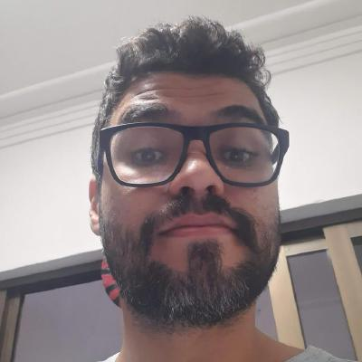

"Comece onde está,use o que você tem, faça o que você pode."

Afinal, quem sou eu?
Olá, meu nome é Cleyton Alves, tenho 32 anos e as atividades que mais gosto de fazer é correr, observar e explorar as maravilhas que a natureza nos proporciona, principalmente mergulhando, gosto muito também de dar uma voltinha com minha esposa e meu cachorro. Me apaixonei pelo mundo da programação e hoje tenho a meta de aprender um pouco mais a cada dia e sempre que possível compartilhar essa minha nova paixão.Sou de Recife, a capital do frevo,dos naufrágios e a capital de Pernambuco também.

Minhas habilidades
- Dedicação
Tive o prazer de sempre estar acompanhado por pessoas e livros que me ensinaram muito sobre fazer o melhor possível e buscar a excelência e maestria em tudo que me proponho a fazer
- Comunicação
Dialogar, prosear, conversar para mim é muito mais que uma habilidade.É um prazer, uma ferramenta que gosto muito de usar.Acredito que os laços que forjam uma boa equipe permeiam sempre por uma boa comunicação.
- Comprometimento
Lealdade aos objetivos seja profissionais ou pessoais é uma fonte de energia para mim.Acredito que quando há alinhamento entre funcionário e a cultura da organização o sucesso se torna apenas uma consequência.
- Empatia
Uma habilidade que complementa muito bem com a capacidade de se comunicar bem ,em minha humilde opinião, compreender os sentimentos e emoções das pessoas que fazem parte ou não da sua vivência é vital para uma boa interação.